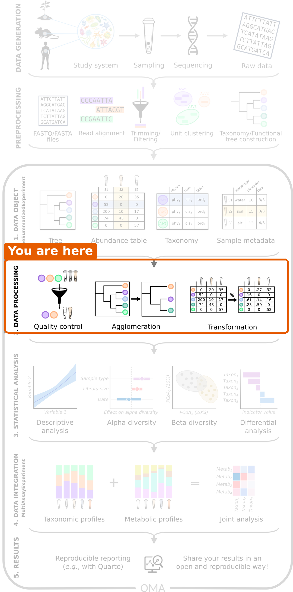
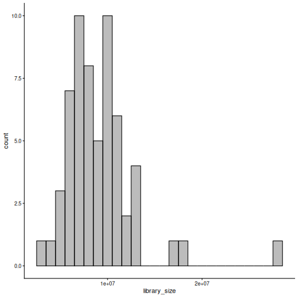
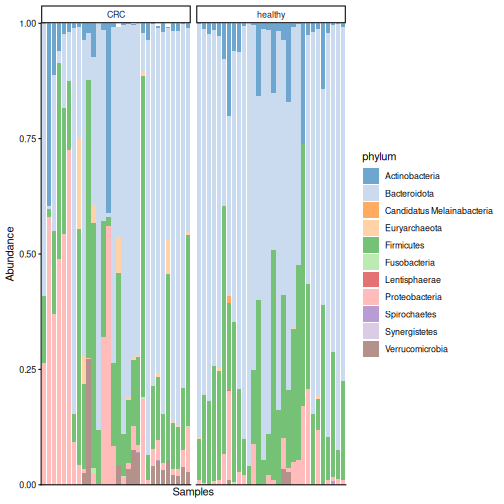
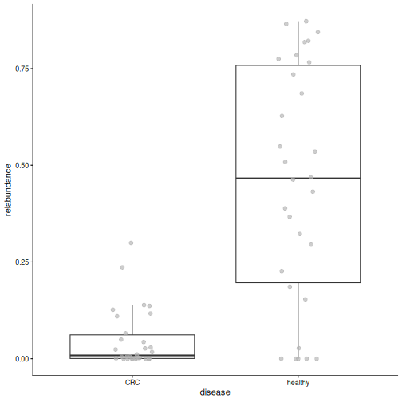
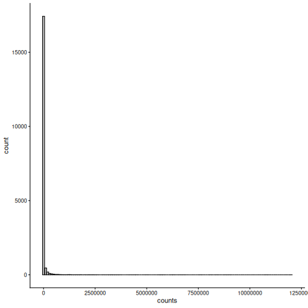
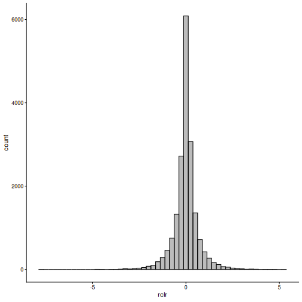
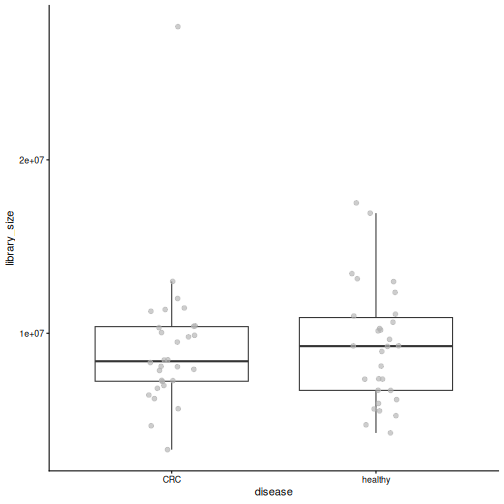
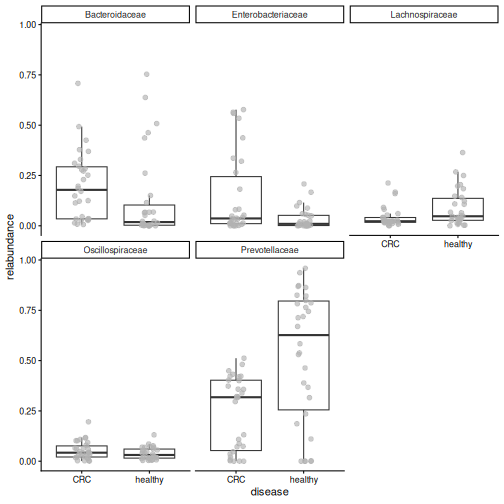

Exploring and preparing microbiome data
Last updated on 2026-10-20 | Edit this page
Estimated time: 130 minutes
Overview
Questions
- How deeply was each sample sequenced?
- How do we look at the data at a higher taxonomic level, such as phylum?
- Why and how do we transform the counts?
- Which bacteria dominate the gut of the people in our study?
Objectives
- Plot the library sizes of the samples and explain why they matter.
- Agglomerate the data to a higher taxonomic rank.
- Transform counts into relative abundances and robust CLR (rclr) values, and explain what rclr does with the zeros.
- Plot the community composition of the samples and the abundance of a single taxon.
- Remove rare taxa with a prevalence filter.
- (Bonus) Store all taxonomic ranks in one object, and work with one
rank using
altExp()andswapAltExp().
Where are we?

We have our data in a TreeSE. Before we can answer our research question, we need to process the data: check its quality, summarize it and transform it. We also take a first look at which bacteria are in the samples.
Load packages and data
R
library(mia)
library(miaViz)
We load the TreeSE that we saved in the previous episode.
R
tse <- readRDS(file.path("data", "tse.rds"))
Library size
In episode 1, we learned that
the total number of reads per sample, the library size,
depends on the sequencing and not on the biology. Let’s check how much
it varies. We sum the counts of each sample (column) and store the
result as a new column in colData:
R
tse$library_size <- colSums(assay(tse, "counts"))
summary(tse$library_size)
OUTPUT
Min. 1st Qu. Median Mean 3rd Qu. Max.
3283981 6947241 8709694 9222329 10478061 27686725 The miaViz function plotHistogram() shows the
distribution. With binwidth, we set the width of each bar,
here one million reads:
R
plotHistogram(tse, col.var = "library_size", binwidth = 1e6)

Result: the largest sample has about 8 times more reads than the smallest. If we compared raw counts, the samples with more reads would seem to have more of everything. We fix this with a transformation below.
Agglomeration: moving up the tree of life
Our data is at the species level. Sometimes it is easier to look at bigger groups, such as genera or phyla. Combining all taxa that belong to the same group is called agglomeration. The counts of the taxa in a group are summed.
R
tse_phylum <- agglomerateByRank(tse, rank = "phylum")
rownames(tse_phylum)
OUTPUT
[1] "Actinobacteria" "Bacteroidota"
[3] "Candidatus Melainabacteria" "Euryarchaeota"
[5] "Firmicutes" "Fusobacteria"
[7] "Lentisphaerae" "Proteobacteria"
[9] "Spirochaetes" "Synergistetes"
[11] "Verrucomicrobia" Result: the 308 species belong to 11 phyla.
Challenge 1: How many genera?
- Agglomerate the data to the genus level and save the result as
tse_genus. - How many genera are in the data?
R
tse_genus <- agglomerateByRank(tse, rank = "genus")
nrow(tse_genus)
OUTPUT
[1] 104Relative abundance
To compare samples with different library sizes, we transform the counts. The simplest transformation is the relative abundance: each count is divided by the library size of its sample. The result is the share of each taxon in the sample. For example, a taxon with 500 reads in a sample of 1000 reads has a relative abundance of 0.5 (50 %).
The function transformAssay() adds a transformed table
to the TreeSE:
R
tse <- transformAssay(tse, assay.type = "counts", method = "relabundance")
assayNames(tse)
OUTPUT
[1] "counts" "relabundance"The TreeSE now holds two tables: the original counts and
the new relabundance table. The original counts are
kept.
Challenge 2: Relative abundances
- What do you expect the relative abundances of each sample (column) to sum to?
- Check your answer for the first five samples.
Hint: colSums() sums the columns of a
table.
- They sum to 1, because each value is the share of one taxon in the sample.
- Check with
colSums():
R
colSums(assay(tse, "relabundance"))[1:5]
OUTPUT
GupDM_A_11 GupDM_A_15 GupDM_A1 GupDM_A10 GupDM_A12
1 1 1 1 1 Community composition
Which bacteria dominate the gut of the people in our study? The
miaViz function plotAbundance() draws a stacked bar for
each sample. With group = "phylum", the taxa are
agglomerated to phyla for the plot, and col.var = "disease"
together with facet.cols = TRUE splits the samples into one
panel per disease group. scales = "free_x" lets each panel
show only its own samples.
R
plotAbundance(
tse, assay.type = "relabundance", group = "phylum",
col.var = "disease", facet.cols = TRUE, scales = "free_x"
)
WARNING
Warning: Removed 355 rows containing missing values or values outside the scale range
(`geom_bar()`).
Result: each bar is one person. Bacteroidota dominate most samples in both groups, followed by Firmicutes, but the communities vary a lot between people. Our eyes cannot tell from this plot whether the two groups differ. The analyses in the next episodes can.
plotAbundance() may print a warning such as
Removed 355 rows containing missing values. It is harmless:
the plot does not draw bars for taxa with zero abundance.
Challenge 3: The most abundant genera
Which five genera are the most abundant in the data?
Hint: use tse_genus from challenge 1 and the
function getTop().
R
getTop(tse_genus, top = 5)
OUTPUT
[1] "Prevotella" "Bacteroides" "Phocaeicola" "Escherichia"
[5] "Bifidobacterium"getTop() ranks the taxa by their mean abundance across
the samples (by default in the counts table).
Prevotella is the most abundant genus.
A closer look at one species
The most abundant species in the data is Prevotella copri.
The miaViz function plotBoxplot() shows its relative
abundance in each group. With features, we choose the taxon
to plot, and with x, the groups:
R
plotBoxplot(
tse, assay.type = "relabundance",
features = "species-Prevotella_copri", x = "disease"
)

Result: in healthy people, P. copri makes up a median of 47 % of the whole community, compared to 1 % in people with CRC. A single species dominates the gut of many healthy people in this study. Keep this species in mind: we will meet it again in every episode that follows.
Robust CLR transformation
Relative abundances are intuitive, but they have a catch that we met in episode 1: because the shares of a sample always sum to 1, an increase of one taxon makes all the others look smaller. Log-ratio transformations are designed for this kind of relative (compositional) data. A ratio compares two taxa in the same sample, so it does not change when the sample is sequenced more deeply. The logarithm makes the ratios symmetric: a taxon that is twice as abundant as another gets log(2) = 0.69, and one that is half as abundant gets log(1/2) = -0.69.
The centred log-ratio (CLR) compares each taxon to the “average” taxon of the same sample (the geometric mean), on a log scale:
- a positive value means that the taxon is more abundant than average in that sample;
- a negative value means that it is less abundant than average;
- zero means that it is exactly average.
The logarithm of zero is not defined, and 84 % of our table is zeros. The robust CLR (rclr) solves this in two steps. First, it calculates the average from the non-zero values only. Then it fills in the zeros with estimates based on the main patterns in the whole table (matrix completion). In the version we use, all values are replaced by these smoothed estimates. The rclr values therefore describe the broad patterns in the data well, but a single value is an estimate, not a measurement. This is why we use rclr for methods that look at the whole table, such as PCA in episode 7, and relative abundances to plot single taxa.
R
tse <- transformAssay(tse, assay.type = "counts", method = "rclr")
assayNames(tse)
OUTPUT
[1] "counts" "relabundance" "rclr" The TreeSE now holds three tables: counts,
relabundance and rclr.
Why transform at all? Many statistical methods, such as PCA and the
t-test, work best when the values are roughly normally distributed.
Let’s compare the distribution of all values in the counts
and rclr tables:
R
plotHistogram(tse, assay.type = "counts", binwidth = 1e5)

R
plotHistogram(tse, assay.type = "rclr", binwidth = 0.25)

Result: the counts are mostly zeros with a long tail of very large values. The rclr values form a bell-shaped distribution around zero, which suits many statistical methods much better.
Challenge 4: What happened to the zeros?
Compare the counts and the rclr values of the first three taxa in the first three samples:
R
assay(tse, "counts")[1:3, 1:3]
OUTPUT
GupDM_A_11 GupDM_A_15 GupDM_A1
species-Escherichia_coli 1632336 5666898 6814491
species-Alistipes_putredinis 964884 0 225222
species-Porphyromonas_asaccharolytica 463162 0 92810R
assay(tse, "rclr")[1:3, 1:3]
OUTPUT
GupDM_A_11 GupDM_A_15 GupDM_A1
species-Escherichia_coli 1.0405323 1.7524587 4.724694
species-Alistipes_putredinis 0.6682048 1.3053407 2.961278
species-Porphyromonas_asaccharolytica 0.2550027 0.4543376 1.192139- Is Escherichia coli more or less abundant than the average taxon in the first sample?
- In the second sample, two taxa have a count of zero. Which rclr values did they get? Were these taxa measured in that sample?
- Its rclr value is 1.04. It is positive, so E. coli is more abundant than the average taxon in that sample.
- They got the values 1.31 and 0.45, although the taxa were not detected in that sample. The rclr filled in the zeros with estimates based on the patterns in the whole table. Keep in mind that these values are estimates, not measurements.
Removing rare taxa
Many taxa are found in only a few samples. The share of samples in which a taxon is found is called its prevalence. For some analyses, such as differential abundance in episode 8, it is useful to remove rare taxa: they carry little information and add many tests.
The function subsetByPrevalent() keeps only taxa that
are found in at least a given share of the samples. Here, a taxon must
have a relative abundance of at least 0.1 %
(detection = 0.001) in at least 10 % of the samples
(prevalence = 0.1):
R
tse_prevalent <- subsetByPrevalent(
tse, assay.type = "relabundance",
detection = 0.001, prevalence = 0.1
)
dim(tse_prevalent)
OUTPUT
[1] 94 60Result: only 94 of the 308 species remain.
Filter or not?
Rare taxa are part of the diversity of a community. For the diversity analyses in episodes 6 and 7, we therefore use all taxa. We use the filtered data only for differential abundance analysis in episode 8.
Challenge 5: A stricter filter
- How many species remain if a species must be found in at least 50 % of the samples?
- What does this tell you about the gut microbiomes of the people in this study?
R
tse_prevalent50 <- subsetByPrevalent(
tse, assay.type = "relabundance",
detection = 0.001, prevalence = 0.5
)
nrow(tse_prevalent50)
OUTPUT
[1] 13- Only 13 species are found in at least half of the people.
- Most species are found in only a few people: every gut microbiome is different.
Save the object
We save the TreeSE, which now contains the library sizes and the transformed tables, for the next episodes.
R
saveRDS(tse, file.path("data", "tse_processed.rds"))
Which table for which analysis?
There is no fixed rule: the right table depends on the method and on its assumptions. Some common choices:
- Alpha diversity is usually calculated from counts or relative abundances.
- Composition plots and Bray–Curtis dissimilarity use relative abundances.
- PCA and other methods that expect roughly normal values use rclr (or CLR) values.
- Differential abundance methods differ: some use log-transformed relative abundances (as we do in episode 8), some CLR values, and some model the counts directly.
Always check what the method you use expects. Many more transformations are available; see the Transformation chapter of OMA.
Challenge 6: Explore the data at family level (30 minutes)
In this exercise, you use what you learned in this episode to explore the data at the family level.
- Check that the library sizes do not differ between the disease
groups: plot
library_sizebydiseasewithplotBoxplot()and test the difference with the Wilcoxon test,daa::getWilcoxonTest(tse, library_size ~ disease)(we explain this test in the next episode). Why is it good news if they do not differ? - Agglomerate the data to the family level with
agglomerateByRank(), and add relative abundances withtransformAssay(). - Find the five most abundant families with
getTop()(use therelabundancetable). - Plot the relative abundance of these five families by disease with
plotBoxplot(). - Which family dominates the healthy samples? Which family is more abundant in CRC? Write two sentences on how this fits with what you learned about Prevotella copri.
1. Library size
R
plotBoxplot(tse, col.var = "library_size", x = "disease")

R
library_test <- daa::getWilcoxonTest(tse, library_size ~ disease)
library_test
OUTPUT
# A tibble: 1 × 8
rownames .y. group1 group2 n1 n2 statistic p
* <chr> <chr> <chr> <chr> <int> <int> <dbl> <dbl>
1 library_size library_size CRC healthy 30 30 438 0.866The library sizes do not differ between the groups (p = 0.87). This is good news: if one group had been sequenced much more deeply, differences between the groups could partly be caused by the sequencing.
2.–4. Family level
R
tse_family <- agglomerateByRank(tse, rank = "family")
WARNING
Warning: 'rclr' includes negative values.
Agglomeration of it might lead to meaningless values.
Check the assay, and consider doing transformation againmanually with agglomerated data.R
tse_family <- transformAssay(
tse_family, assay.type = "counts", method = "relabundance"
)
top_families <- getTop(tse_family, top = 5, assay.type = "relabundance")
top_families
OUTPUT
[1] "Prevotellaceae" "Bacteroidaceae" "Enterobacteriaceae"
[4] "Lachnospiraceae" "Oscillospiraceae" R
plotBoxplot(
tse_family, assay.type = "relabundance", x = "disease",
features = top_families, facet.by = "rownames"
)

agglomerateByRank() warns that
'rclr' includes negative values. Agglomeration
sums the values of all tables. Summed counts are fine, but
summed rclr values are meaningless. The rule is: agglomerate
first, then transform. This is why we calculated the relative
abundances again after agglomerating.
5. Prevotellaceae dominate the healthy samples (median 63 % vs 32 % in CRC), while Bacteroidaceae are more abundant in CRC (median 18 % vs 2 %). Most of the Prevotellaceae in healthy people is Prevotella copri; in CRC, its place is partly taken by Bacteroides.
Bonus: all ranks in one object
This section is optional. It shows a way to keep the data at all taxonomic ranks in one object, which is handy in larger analyses. The next episodes do not need it.
So far, we created a separate object for each rank
(tse_phylum, tse_genus,
tse_family). With many ranks, this quickly becomes hard to
manage: each object must be transformed, subset and saved on its
own.
Instead, we can keep all ranks in one object. The
function agglomerateByRanks() agglomerates the data to
every taxonomic rank at once:
R
tse <- agglomerateByRanks(tse)
altExpNames(tse)
OUTPUT
[1] "superkingdom" "phylum" "class" "order" "family"
[6] "genus" "species" When you run this, R prints a warning for each rank (we hide them on
this page): 'rclr' includes negative values. Agglomeration
sums the values of all tables. Summed counts are fine, but
summed rclr values are meaningless. The rule is: agglomerate
first, then transform. We therefore transform the agglomerated
data again below.
The main data is still the species-level data that we named
"main" in episode 4.
Each rank is stored inside the TreeSE as an alternative
experiment (altExp): a complete TreeSE of its own,
with the same samples. We pick one with altExp():
R
altExp(tse, "phylum")
OUTPUT
class: TreeSummarizedExperiment
dim: 11 60
metadata(1): agglomerated_by_rank
assays(3): counts relabundance rclr
rownames(11): Actinobacteria Bacteroidota ... Synergistetes
Verrucomicrobia
rowData names(7): superkingdom phylum ... genus species
colnames(60): GupDM_A_11 GupDM_A_15 ... GupDM_JO GupDM_JP
colData names(28): study_name subject_id ... disease_location
library_size
reducedDimNames(0):
mainExpName: main
altExpNames(0):
rowLinks: a LinkDataFrame (11 rows)
rowTree: 1 phylo tree(s) (11 leaves)
colLinks: NULL
colTree: NULLWith the altexp argument, transformAssay()
transforms the main data and all the alternative experiments with a
single command:
R
tse <- transformAssay(
tse, assay.type = "counts", method = "relabundance",
altexp = altExpNames(tse)
)
tse <- transformAssay(
tse, assay.type = "counts", method = "rclr",
altexp = altExpNames(tse)
)
assayNames(altExp(tse, "phylum"))
OUTPUT
[1] "counts" "relabundance" "rclr" The table names are the same as before, but the meaningless summed
relabundance and rclr tables have now been
replaced by tables calculated from the agglomerated counts.
Most functions work on the main data of a TreeSE. To analyse another
rank, we make it the main data with swapAltExp(). The
family-level data already has the sample information, so
withColData = FALSE tells the function not to copy it a
second time from the old main data:
R
tse_family <- swapAltExp(tse, "family", withColData = FALSE)
tse_family
OUTPUT
class: TreeSummarizedExperiment
dim: 48 60
metadata(1): agglomerated_by_rank
assays(3): counts relabundance rclr
rownames(48): Acidaminococcaceae Actinomycetaceae ... Veillonellaceae
Victivallaceae
rowData names(7): superkingdom phylum ... genus species
colnames(60): GupDM_A_11 GupDM_A_15 ... GupDM_JO GupDM_JP
colData names(28): study_name subject_id ... disease_location
library_size
reducedDimNames(0):
mainExpName: family
altExpNames(7): superkingdom phylum ... species main
rowLinks: a LinkDataFrame (48 rows)
rowTree: 1 phylo tree(s) (48 leaves)
colLinks: NULL
colTree: NULLtse_family has families as its rows
(mainExpName: family), and its other ranks, including the
original "main" data, are still available as alternative
experiments.
Why alternative experiments?
Alternative experiments are harder to understand than separate objects, but they have big advantages: all ranks share the same sample information, they stay in sync when we subset samples, one command transforms all of them, and we save a single object.
Challenge 7 (bonus): Working at the genus level
- Use
swapAltExp()to make the genus level the main data. Store the result intse_genus. - Which tables (assays) does it have?
- Find the five most abundant genera with
getTop(). Do you get the same answer as in challenge 3?
R
tse_genus <- swapAltExp(tse, "genus", withColData = FALSE)
assayNames(tse_genus)
OUTPUT
[1] "counts" "relabundance" "rclr" R
getTop(tse_genus, top = 5)
OUTPUT
[1] "Prevotella" "Bacteroides" "Phocaeicola" "Escherichia"
[5] "Bifidobacterium"The genus-level data already has the relabundance and
rclr tables, and the top genera are the same as in
challenge 3.
- Library sizes differ between samples, so we compare relative values instead of raw counts.
-
agglomerateByRank()combines taxa into a higher taxonomic rank. - (Bonus)
agglomerateByRanks()stores the data at every rank as alternative experiments in one object;altExp()picks one, andswapAltExp()makes one the main data. -
transformAssay()adds transformed tables, such as relative abundance and robust CLR (rclr), and keeps the original counts. - rclr compares each taxon to the average taxon of its sample on a log scale. It fills in the zeros with estimates, so single rclr values are estimates, not measurements.
- Which table to use depends on the method and its assumptions. The rclr values are closer to a normal distribution than the counts.
-
plotAbundance()shows the community composition of each sample, andplotBoxplot()the abundance of a single taxon by group. -
subsetByPrevalent()removes rare taxa. Use it for differential abundance, but not for diversity. - In our study, one species, Prevotella copri, dominates the gut of many healthy people.